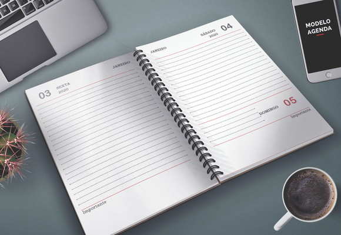

<!--
  Generated template for the MenuPage page.

  See http://ionicframework.com/docs/components/#navigation for more info on
  Ionic pages and navigation.
-->
<ion-header>
  <ion-navbar>
    <ion-title>Menu</ion-title>
  </ion-navbar>
</ion-header>

<ion-content padding>
  <button id="btnVeiculos"class= "btn" ion-button block (click)="pageVeiculos()">Veiculos    
   
  </button>
  <button id="btnConta" class= "btn" ion-button block (click)="pageConta()">Conta   
    
   </button>
   <button id="btnAgendar" class= "btn" ion-button block (click)="pageAgendamento()">Agendamento  
    
   </button>


</ion-content>
